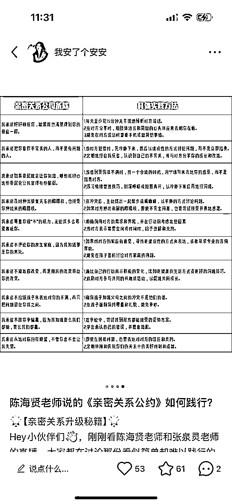
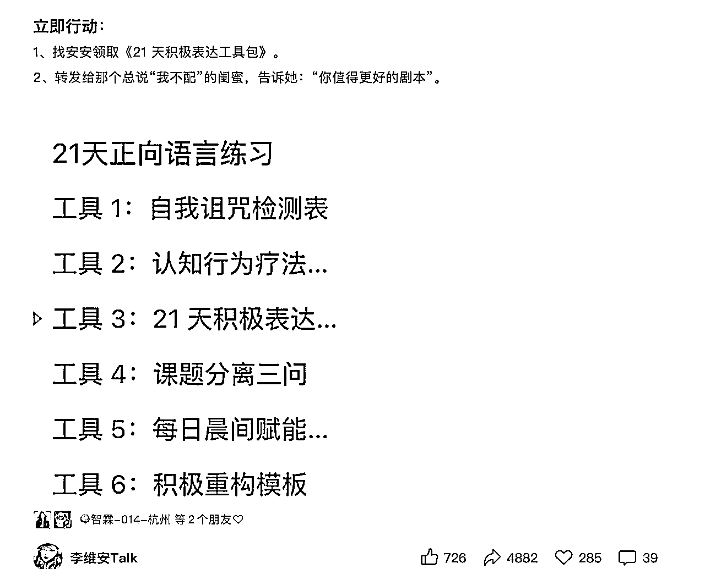
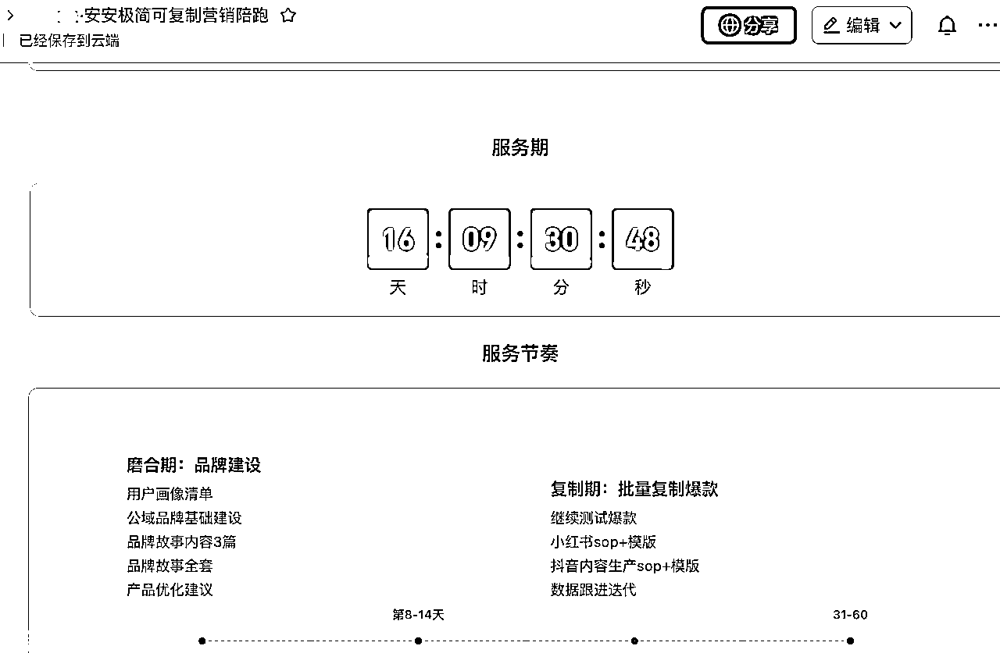

来源：https://q023a2uegz.feishu.cn/docx/M1budiF4woICg3xxraCcRBZLnqA
使用场景：
1、干货型小红书笔记快速产出，让干货可视化，让内容原创化
2、笔记与文章配套工具模版制作，让引流更高效
3、交付模板化，让用户使用无门槛，让交付更轻松，效果更落地
在越来越多人入局自媒体创业的红海中，每天都在上演"内容焦虑"的生存战：
谁能率先掌握将知识转化为可变现工具的能力，谁就能在竞争中抢占先机。今天分享的 AI 知识表格工具化方法论，能帮你：
✅7 天搭建个人 IP 知识库：将零散经验转化为可复用的标准化工具包
✅内容产出效率提升 300%：用表格模板替代重复文案创作
✅精准塑造专业人设：结构化知识工具增强用户信任感
✅开辟知识变现新路径：通过付费表格工具实现被动收入
接下来手把手教你，如何用 AI 从 0 到 1 打造属于自己的知识变现工具库，全程无需复杂技术，新手也能轻松复制！
传统图文内容同质化严重，而结构化表格工具具有三大核心优势：
将专业知识转化为"填空式执行手册"，让用户感受到直接价值。在自媒体竞争激烈的当下，这种方法可以让复杂知识变得简单易懂、拿来即用，使你瞬间从竞争对手中脱颖而出，为用户提供个性价比极高的解决方案。
视觉化表格降低认知成本，提升品牌辨识度。相较于大段文字，表格形式更加直观清晰，关键信息一目了然，增强干货感。用户在浏览时能够迅速抓住重点，从而加深对品牌形象和专业能力的印象，增强对你的信任。

工具类内容自带分享属性，用户更愿意主动传播。当用户发现这份表格工具对自身有极大帮助时，他们往往会在朋友圈、社群等渠道主动分享，从而扩大你的品牌影响力，吸引更多潜在客户。
以我自己为例，写完文章后加入与主题对应的练习模版表格，可以快速提高引流的效率

我最推荐用 Kimi 完成初稿搭建，核心在于这组经过 100 + 次优化的「黄金提示词」：
请对以下文案进行深度拆解：[粘贴你的原始内容]
完成后请输出可直接使用的 Markdown 表格格式
使用技巧：
当需要高频产出同类工具时，建议创建专属智能体。可以选择在豆包建立最简易的工具生成智能体
下面是指令模版：
请根据我发给你文案内容。整理方法论，并且把方法论做成一个任何人通过填写表格都可以去落地执行这个方法论的详细表格工具，当你准备好了，请跟我说：把文案发给我
比较适合于：你对有清晰的底层逻辑，有针对的使用场景和想达成的目的，并且能够清晰描述出来的情况下
我做了个现成的智能体，需要的小伙伴可以找我要
将 AI 生成的表格升级为付费产品，需要做好 3 层价值叠加：
补充配套使用视频、常见问题解答。通过这些辅助资料，用户可以更全面地了解和使用表格工具，提高使用效果，增加对产品的满意度。
添加成功案例截图、用户评价背书。真实的案例和积极的评价能够有效增强潜在客户的信任感，降低他们的购买决策难度。
设置限时领取、时效限定等机制。制造产品的稀缺性和独特性，刺激用户尽快购买，提高产品的销售转化率。
对 AI 生成内容进行二次创作，添加个人案例和独家观点。这是确保内容版权归属和独特性的关键步骤，既能避免侵权风险，又能突出你的专业特色。
提前测试表格在手机端、电脑端的显示效果。在不同设备上，表格的显示可能会出现差异，影响用户体验。因此，要确保表格在各种常见设备上都能正常、美观地展示。
建立用户反馈渠道，每季度更新优化工具版本。用户的需求和市场环境都在不断变化，持续收集用户反馈并据此优化表格工具，能够保持产品的竞争力和用户满意度。
表格载体上，飞书可以满足多种需求，并且可以实时修改和改变权限，是一个很好的载体，同时也是一个很好的交付可视化工具

了解安安：